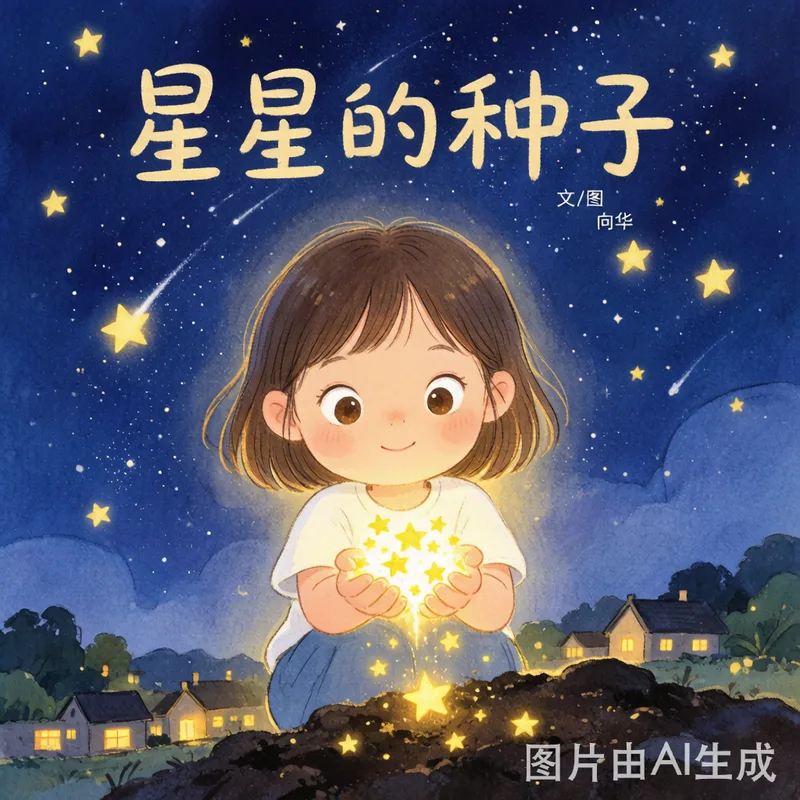
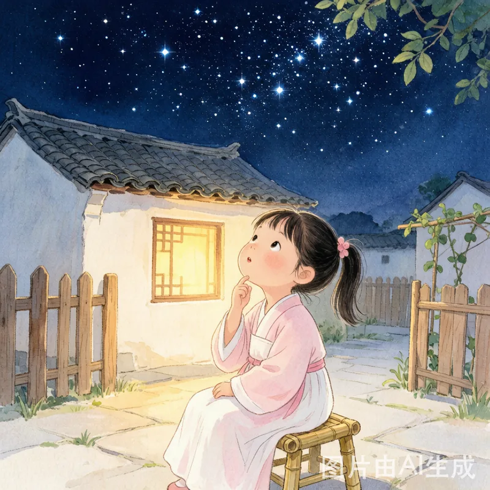
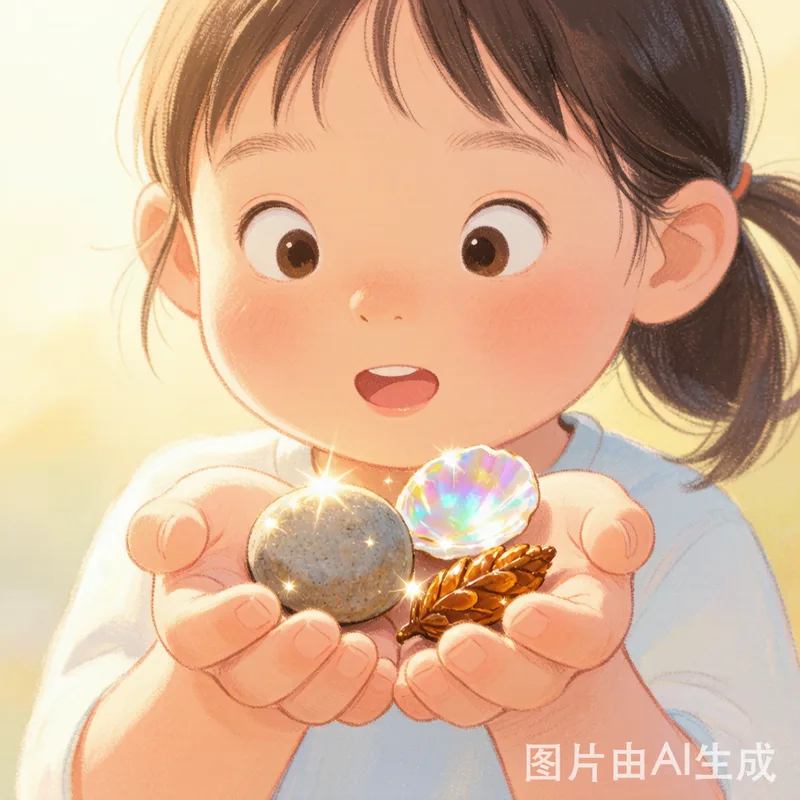
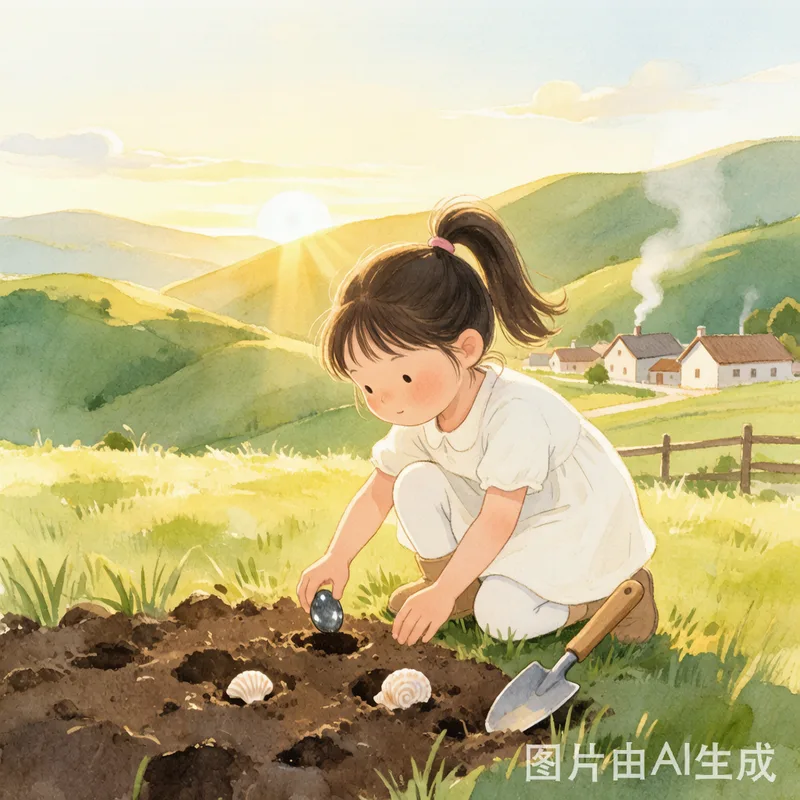
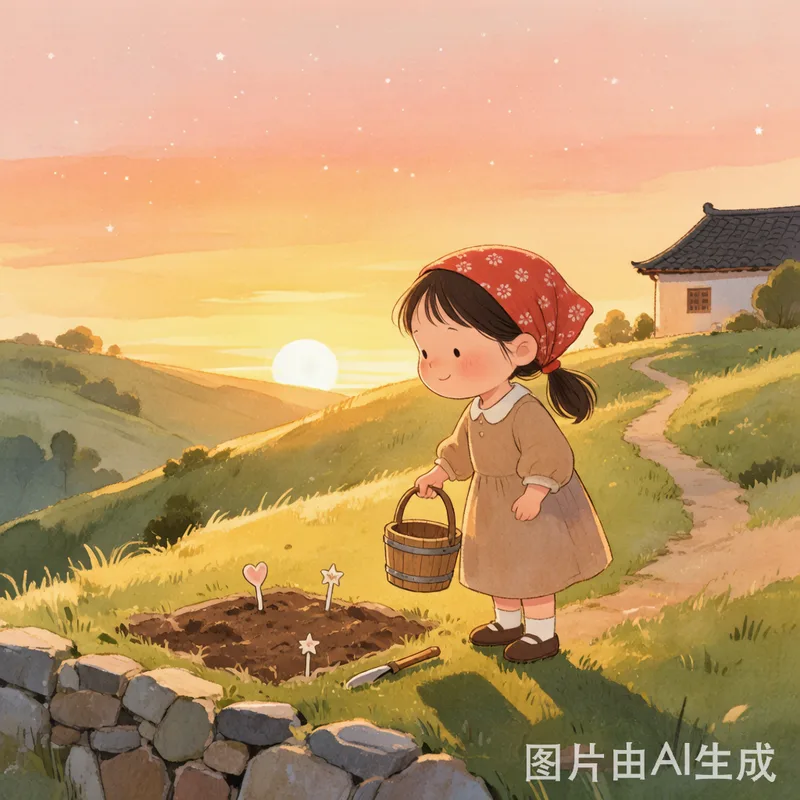
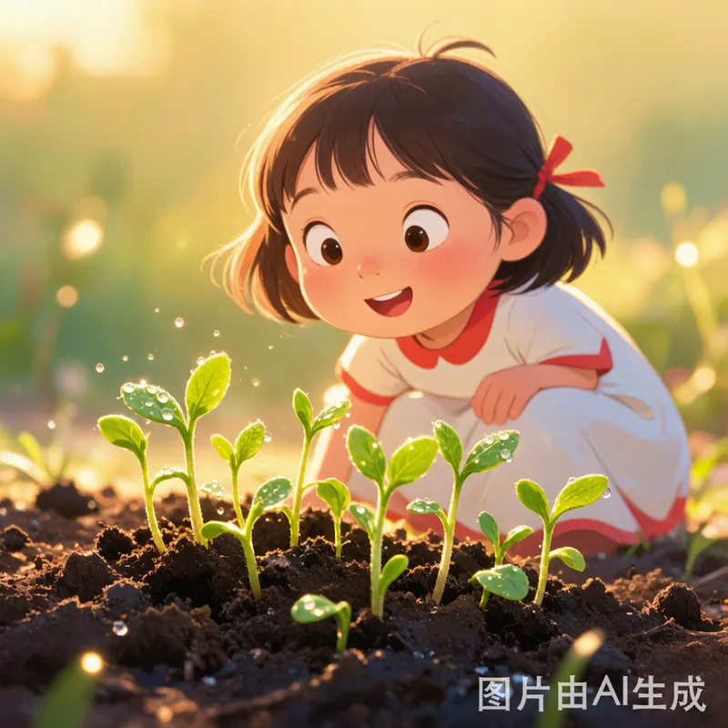
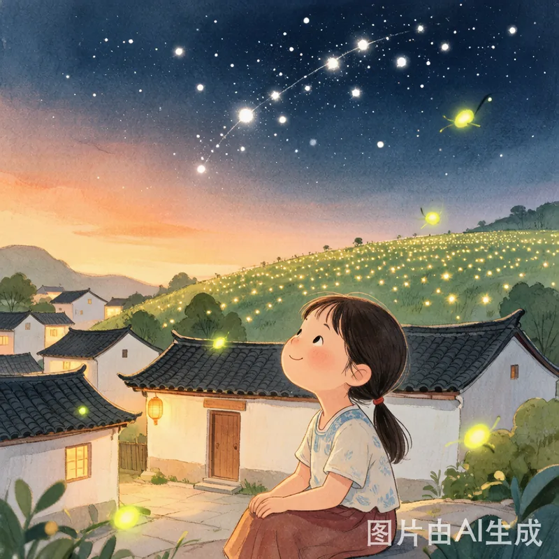

一个关于等待与创造的故事

在一个宁静的小村庄里，住着一个叫小禾的女孩。她有一双亮晶晶的眼睛，最喜欢做的事情就是——看星星。
每天晚上，小禾都会搬一把小竹椅，坐在院子里仰着头数星星。她总觉得星星像天上撒下的碎钻石，美得让人舍不得眨眼。

可是有一天晚上，天空变得灰蒙蒙的，一颗星星都看不到了。
小禾难过极了，她问奶奶："奶奶，星星去哪儿了呀？"
奶奶笑着说："星星只是躲起来了，它们啊，也需要休息呢。"
小禾想了想，忽然有了主意——如果星星躲起来了，那我就自己种星星吧！

第二天一早，小禾跑到山坡上，挖了一小块地，认认真真地翻了土。
然后她从口袋里掏出一些东西：一颗圆圆的小石子、一片亮闪闪的河蚌壳、一粒琥珀色的松果……这些都是她平时捡到的"宝贝"，她觉得它们长得像星星。

她把这些"小星星"一颗一颗地埋进土里，像种花一样轻轻盖上泥土，又从溪边舀来清水，一点一点浇上去。
邻居的小伙伴阿亮跑过来看，忍不住笑了："小禾，石头和贝壳怎么能长出星星呀？"
小禾认真地说："我奶奶说，用心种的东西，总会长出来的。"
阿亮摇摇头跑了。小禾没有在意。

她每天早上浇水，傍晚来看一眼，还轻轻对泥土说："小星星，快出来吧，天上现在黑黑的，大家都在等你呢。"
日子一天天过去，泥土里什么也没长出来。
小禾有点失望，但她还是每天去浇水。她想：也许星星长得比较慢，毕竟它们在天上那么远，来到地上肯定需要多一点时间嘛。
第十天的早上，小禾又来到山坡上。
她蹲下来一看——泥土里冒出了嫩绿的小芽！不是一颗，是好几颗！
小禾高兴得跳了起来。原来，河蚌壳旁边积了水，吸引了几颗野花的种子；松果里本来就藏着生命的秘密；而那颗小石子，虽然没发芽，却稳稳地守在一株小苗旁边，像一面小小的盾牌，帮它挡住了风。

小禾没有种出天上那种星星，但她种出了地上的星星——那些小花在晨光里张开的时候，真的像一颗颗亮闪闪的星星，只不过它们是长在泥土里的。
那天傍晚，天空也放晴了。真正的星星一颗一颗回到了夜空中。
小禾坐在院子里，看着天上的星星，又想着山坡上那些泥土里的"星星"，忽然明白了什么——
天上的星星，不是因为她种花才回来的。但她在等待星星的那段日子里，并没有只是坐着难过，她动手种出了属于自己的光。
从那以后，村子里的小伙伴们都爱上了小禾的"星星花园"。
阿亮也来了，他不好意思地说："小禾，我能和你一起种吗？"
小禾笑着说："当然可以呀！不过你要记住——种星星最重要的是什么？"
阿亮想了想："是……种子？"
小禾摇摇头，眨了眨亮晶晶的眼睛："是——不放弃呀。🌟"